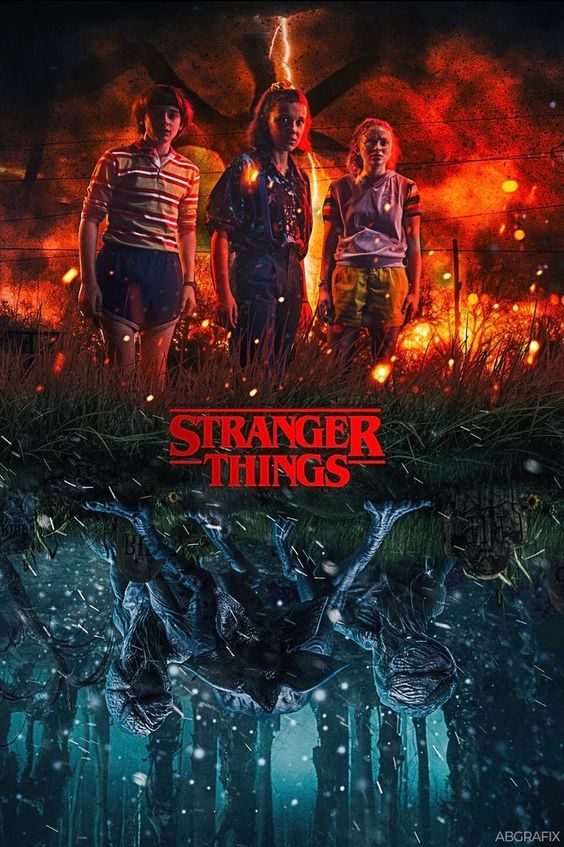

Stranger Things

Summary
Stranger Things is a science fiction horror television series created by the Duffer Brothers. It is set in the 1980s in the fictional town of Hawkins, Indiana.
Cast
- Millie Bobby Brown as Eleven
- Finn Wolfhard as Mike Wheeler
- Gaten Matarazzo as Dustin Henderson
- Caleb McLaughlin as Lucas Sinclair
- Noah Schnapp as Will Byers
- Winona Ryder as Joyce Byers
Storyline
The series follows a group of kids who encounter supernatural forces and government conspiracies while searching for their missing friend.
Episodes
- Season 1: 8 episodes
- Season 2: 9 episodes
- Season 3: 8 episodes